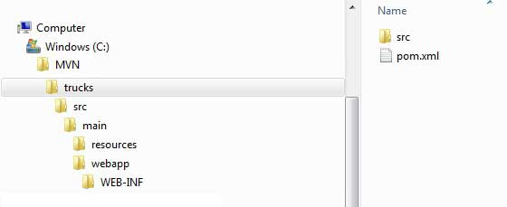
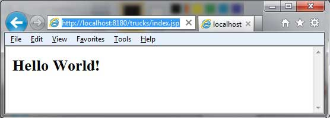

Maven Web Application
This tutorial will teach you how to manage a web based project using version control system Maven. Here you will learn how to create/build/deploy and run a web application:
Create Web Application
To create a simple java web application, we'll use maven-archetype-webapp plugin. So let's open command console, go the C:\MVN directory and execute the following mvn command.
C:\MVN>mvn archetype:generate -DgroupId=com.companyname.automobile -DartifactId=trucks -DarchetypeArtifactId=maven-archetype-webapp -DinteractiveMode=false
Maven will start processing and will create the complete web based java application project structure.
[INFO] Scanning for projects...
[INFO] Searching repository for plugin with prefix: 'archetype'.
[INFO] -------------------------------------------------------------------
[INFO] Building Maven Default Project
[INFO] task-segment: [archetype:generate] (aggregator-style)
[INFO] -------------------------------------------------------------------
[INFO] Preparing archetype:generate
[INFO] No goals needed for project - skipping
[INFO] [archetype:generate {execution: default-cli}]
[INFO] Generating project in Batch mode
[INFO] --------------------------------------------------------------------
[INFO] Using following parameters for creating project
from Old (1.x) Archetype: maven-archetype-webapp:1.0
[INFO] --------------------------------------------------------------------
[INFO] Parameter: groupId, Value: com.companyname.automobile
[INFO] Parameter: packageName, Value: com.companyname.automobile
[INFO] Parameter: package, Value: com.companyname.automobile
[INFO] Parameter: artifactId, Value: trucks
[INFO] Parameter: basedir, Value: C:\MVN
[INFO] Parameter: version, Value: 1.0-SNAPSHOT
[INFO] project created from Old (1.x) Archetype in dir: C:\MVN\trucks
[INFO] -------------------------------------------------------------------
[INFO] BUILD SUCCESSFUL
[INFO] -------------------------------------------------------------------
[INFO] Total time: 16 seconds
[INFO] Finished at: Tue Jul 17 11:00:00 IST 2012
[INFO] Final Memory: 20M/89M
[INFO] -------------------------------------------------------------------
Now go to C:/MVN directory. You'll see a java application project created named trucks (as specified in artifactId).
Maven uses a standard directory layout. Using above example, we can understand following key concepts
| Folder Structure | Description |
|---|---|
| trucks | contains src folder and pom.xml |
| src/main/webapp | contains index.jsp and WEB-INF folder. |
| src/main/webapp/WEB-INF | contains web.xml |
| src/main/resources | it contains images/properties files . |
POM.xml
<project xmlns="http://maven.apache.org/POM/4.0.0"
xmlns:xsi="http://www.w3.org/2001/XMLSchema-instance"
xsi:schemaLocation="http://maven.apache.org/POM/4.0.0
http://maven.apache.org/maven-v4_0_0.xsd">
<modelVersion>4.0.0</modelVersion>
<groupId>com.companyname.automobile</groupId>
<artifactId>trucks</artifactId>
<packaging>war</packaging>
<version>1.0-SNAPSHOT</version>
<name>trucks Maven Webapp</name>
<url>http://maven.apache.org</url>
<dependencies>
<dependency>
<groupId>junit</groupId>
<artifactId>junit</artifactId>
<version>3.8.1</version>
<scope>test</scope>
</dependency>
</dependencies>
<build>
<finalName>trucks</finalName>
</build>
</project>
If you see, Maven also created a sample JSP Source file
Open C:\ > MVN > trucks > src > main > webapp > folder, you will see index.jsp.
<html>
<body>
<h2>Hello World!</h2>
</body>
</html>
Build Web Application
Let's open command console, go the C:\MVN\trucks directory and execute the following mvn command.
C:\MVN\trucks>mvn clean package
Maven will start building the project.
[INFO] Scanning for projects...
[INFO] -------------------------------------------------------------------
[INFO] Building trucks Maven Webapp
[INFO] task-segment: [clean, package]
[INFO] -------------------------------------------------------------------
[INFO] [clean:clean {execution: default-clean}]
[INFO] [resources:resources {execution: default-resources}]
[WARNING] Using platform encoding (Cp1252 actually) to
copy filtered resources,i.e. build is platform dependent!
[INFO] Copying 0 resource
[INFO] [compiler:compile {execution: default-compile}]
[INFO] No sources to compile
[INFO] [resources:testResources {execution: default-testResources}]
[WARNING] Using platform encoding (Cp1252 actually) to
copy filtered resources,i.e. build is platform dependent!
[INFO] skip non existing resourceDirectory
C:\MVN\trucks\src\test\resources
[INFO] [compiler:testCompile {execution: default-testCompile}]
[INFO] No sources to compile
[INFO] [surefire:test {execution: default-test}]
[INFO] No tests to run.
[INFO] [war:war {execution: default-war}]
[INFO] Packaging webapp
[INFO] Assembling webapp[trucks] in [C:\MVN\trucks\target\trucks]
[INFO] Processing war project
[INFO] Copying webapp resources[C:\MVN\trucks\src\main\webapp]
[INFO] Webapp assembled in[77 msecs]
[INFO] Building war: C:\MVN\trucks\target\trucks.war
[INFO] -------------------------------------------------------------------
[INFO] BUILD SUCCESSFUL
[INFO] -------------------------------------------------------------------
[INFO] Total time: 3 seconds
[INFO] Finished at: Tue Jul 17 11:22:45 IST 2012
[INFO] Final Memory: 11M/85M
[INFO] -------------------------------------------------------------------
Deploy Web Application
Now copy the trucks.war created in C:\ > MVN > trucks > target > folder to your webserver webapp directory and restart the webserver.
Test Web Application
Run the web-application using URL : http://<server-name>:<port-number>/trucks/index.jsp
Verify the output.
